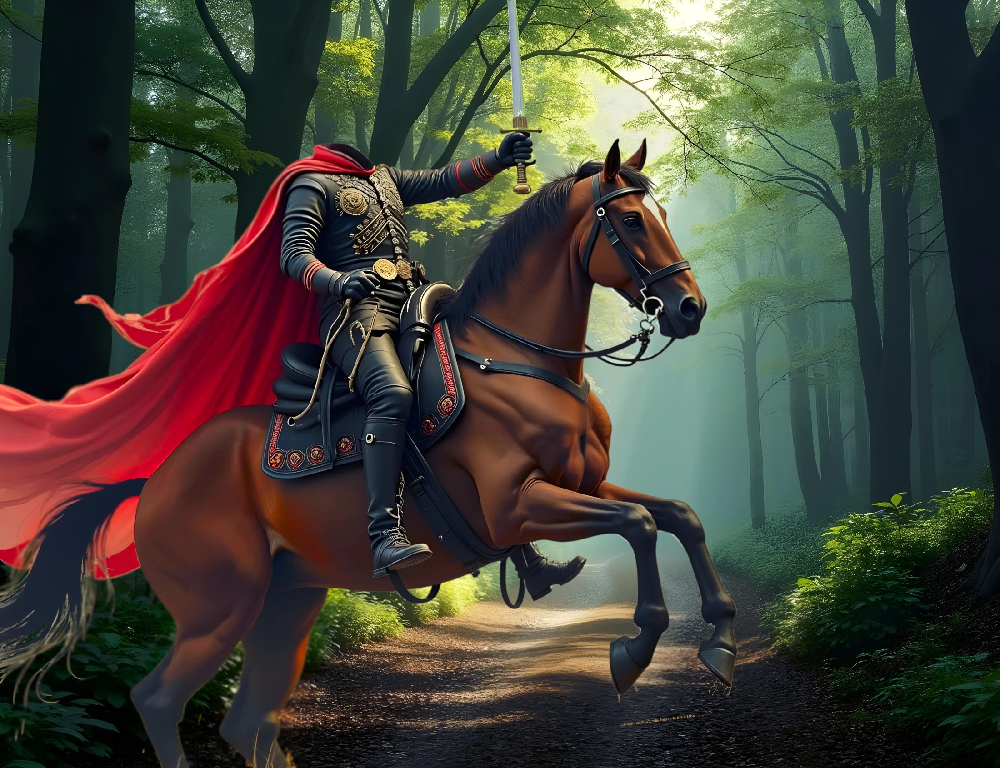

The Headless Horseman of Small Valley
Focus: idioms, phrasal verbs, common expressions

Note: Skim the article to spot the bold idioms and common expressions, then do the exercises.
In the town of Small Valley, NY, there is a legend about a ghostly headless rider who travels the woods at night on horseback—the Headless Horseman. This ghost was, in life, a British soldier in the American Revolutionary War of 1776. In the battle of Small Valley, the American soldiers had overrun the British soldiers who were all fleeing for their lives. One British soldier, however, stayed to fight, and with his fighting skill and excellent swordsmanship he took on 12 soldiers at one time. His moves were so swift, it did not matter that there were soldiers all around him. He defeated them all, and when the last one fell, he mounted his horse to make his escape. But as he was fleeing on horseback, a cannonball took off his head.
His horse continued on into Small Valley and when he finally stopped at the town square, the soldier was still sitting upright on his horse. It was such a horrible sight—this headless man sitting motionless on his horse—that everyone hid in their shops. Hours later, the horse fell over and died. The people buried both the man and horse but no one ever found the soldier's head.
The legend goes that the ghost of the Headless Horseman rides around the town and countryside at nights looking for his head. If you happen to cross his path, he will chase you down and take off your head with his sword.
About fifteen years afterward there came to the town a young minister who had once been a skilled soldier. The minister took pity on the soul of the Headless Horseman and also on the townspeople whose relatives kept disappearing. He decided to put a stop to it.
He spent months in the library doing research. He spent countless days combing the woods around the old battlefield looking for the Horseman's head. Sometimes, he could see in the distance the Horseman storming towards him on his horse with his sword held high. The minister, being himself a skilled horseman, was able to escape these close encounters.
After digging and searching everywhere, it dawned on the minister that maybe he should search the trees rather than the ground. He climbed many trees and, at last, he found the skull lodged between two tree branches. He loosened the skull with his sword and it fell to the ground. The minister climbed down quickly, but when he reached the ground, the Headless Horseman came riding up swiftly and leaped from his horse onto the minister. After a struggle, they both got up and fought with their swords. It was a tremendous fight. Eventually, the minister fell to the ground, grabbed the skull and threw it at the Horseman who caught it and immediately disappeared. The minister knew that the Horseman finally had his peace.